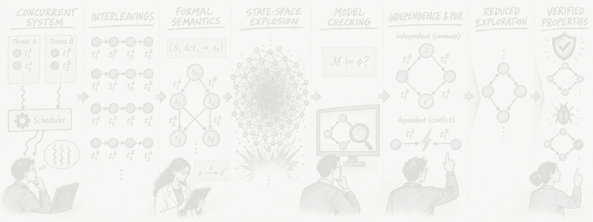
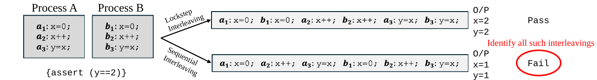

1. Why Verify Concurrent Programs?
A concurrent program consists of multiple processes or threads whose actions may execute concurrently and interact through shared variables, communication, synchronisation, or other shared resources. Under the interleaving model of concurrency, a single concurrent execution may be represented by different orderings, or interleavings, of its concurrent events. Thus, even for a fixed input, different scheduling choices can lead to different execution paths and potentially different reachable states. This proliferation of possible interleavings is a fundamental source of complexity in the verification of concurrent systems.[1, Ch. 2]
Consider the two processes shown below, both operating on the shared variables x and y. In the first interleaving, their operations alternate and the execution terminates with y = 2, satisfying the assertion. In the second, one process executes before the other, resulting in y = 1 and an assertion failure. Hence, checking a single execution is not sufficient: correctness must account for the relevant interleavings that the concurrent program may exhibit.

2. A Running Concurrent-System Example
I will use the following concurrent program throughout to explain the main concepts. It consists of two processes operating on the shared Boolean variables x and y, which are initially zero.
Process A
x = 0;// t1Ay = 0; // t2Ax=0a1y=0a2
Process B
y = 1;// t1Bx = 1; // t2By=1b1x=1b2
The statements inside each process execute in program order, as shown by the arrows between its local control states. The scheduler may interleave transitions from Process A and Process B.
I use the formal model of Labelled Formal Concurrent System (LFCS) semantics to represent the above example. The local states tell us where each process is; the shared-object valuation tells us what the processes have collectively written so far.[1, §§2.1–2.2]
Labelled Formal Concurrent System Semantics
- Processes: P = {A, B}, where A = {a0,a1,a2} and B = {b0,b1,b2}.
- Shared objects: O = {x, y}, with value domains Vx = Vy = {0,1}.
- Global state: s = (ai,bj,x,y) ∈ A × B × Vx × Vy.
- Initial state: s0 = (a0,b0,0,0).
| Transition | LFCS transition | Meaning |
|---|---|---|
t1A | (a0, true, x := 0, a1) | Process A writes x. |
t2A | (a1, true, y := 0, a2) | Process A writes y. |
t1B | (b0, true, y := 1, b1) | Process B writes y. |
t2B | (b1, true, x := 1, b2) | Process B writes x. |
The two program-order constraints are t1A < t2A and t1B < t2B. Subject to those constraints, there are six complete schedules, which we will see in the next section. They start from the initial state (a0,b0,0,0) and terminate in three possible states: (a2,b2,1,1), (a2,b2,0,0), and (a2,b2,1,0).
3. Model Checking the Global State Space
Model checking is an automated verification technique that systematically explores the behaviours of a program or system and checks whether each reachable execution satisfies a desired property. In stateless model checking, the verifier repeatedly executes the program under different schedules without storing every previously reached global state; this keeps memory usage low, but may revisit the same states and execution prefixes many times. In stateful model checking, the verifier constructs the reachable-state graph and stores visited states, avoiding repeated exploration at the cost of potentially substantial memory consumption.[1, §2.2]
Stateful depth-first search
A standard stateful model checker explores the reachable-state graph using the following depth-first search algorithm. The stack stores states that remain to be explored, while the visited set H ensures that each reachable state is expanded at most once.
- Initialize:
Stackis empty;His empty; - push(
s0) ontoStack; - while
Stack ≠ ∅do { -
s:= pop(Stack); - if
s ∉ Hthen { - insert
sintoH; -
T:= enabled(s); - for each
t ∈ Tdo { -
s′:= successor ofsafter executingt; - push(
s′) ontoStack; - }
- }
- }
The graph constructed by this algorithm is the global state space AG, which contains every state reachable from s0. Each node records a snapshot of both processes' control locations and the shared values, while each edge represents one enabled process transition. Whenever DFS removes a state s from the stack for the first time, it records s in H, computes the transitions enabled there, and pushes every successor onto the stack. Repeating this process until the stack is empty constructs the complete reachable-state graph shown below.[1, §2.2]
t1A: x:=0t2A: y:=0t1B: y:=1t2B: x:=1Example property: deadlock freedom
A reachable state is a deadlock when no transition is enabled there.[1, Def. 3.11] In the exploration graph, the only states without outgoing edges are the three final states s10 = (a2,b2,1,1), s11 = (a2,b2,1,0), and s12 = (a2,b2,0,0). Here, these states represent normal termination because both processes have reached their final local states, a2 and b2. In a system expected to continue running, however, reaching a non-final state with no enabled transition would constitute a deadlock. Thus, the checker determines deadlock freedom by inspecting every reachable state with no outgoing edge and deciding whether it is a valid terminal state.
The state-space explosion problem
For a concurrent program, a global state combines the local state of every process with the values of all shared objects. As the number of processes and enabled actions increases, the product of these local possibilities grows rapidly. Moreover, independent transitions may be scheduled in many different orders, so the checker can encounter a combinatorial number of paths even when those paths differ only in the ordering of unrelated operations. Consequently, both the visited set and the transition graph may grow exponentially, exhausting time or memory long before the search completes.[1, Ch. 3]
4. Partial Order Reduction
Partial Order Reduction (POR) is a model-checking technique for reducing the number of interleavings that must be explored. It identifies schedules that differ only in the ordering of independent transitions and explores representative transitions instead, while preserving the behaviours relevant to the property being checked.[1, Ch. 3]
Two sequences of transitions are equivalent if they can be obtained from each other by swapping adjacent, independent transitions. Thus, given a valid dependency relation, sequences of transitions can be grouped into equivalence classes, which Mazurkiewicz calls traces.[1, §3.2] In practice, this reduction is realized using persistent sets, which restrict the transitions explored from a state, and sleep sets, which prevent equivalent transition orderings from being explored repeatedly.[1, Chs. 4–5]
4.1 Independent Transitions
Definition: Dependency Relation and Independent Transitions [1, Def. 3.1]
Let T be the set of transitions in LFCS and D ⊆ T × T be a binary, reflexive, and symmetric relation. The relation D is a valid dependency relation for the LFCS iff for all t1, t2 ∈ T, (t1,t2) ∉ D (t1 and t2 are independent) implies that the following two properties hold for all global states s ∈ S of the LFCS:
- If
t1is enabled insands —t1→ s′, thent2is enabled insifft2is enabled ins′(independent transitions can neither enable nor disable each other); and - If
t1andt2are enabled ins, then there is a unique states′such thats —t1t2→ s′ands —t2t1→ s′(independent transitions are commutative).
Example
t1A writes x, whereas t1B writes y. At s0, they are simultaneously enabled, neither transition changes the enabledness of the other, and both execution orders reach s4 = (a1,b1,0,1). Therefore, they are independent. The same reasoning applies to t2A and t2B.
By contrast, t1A and t2B both write x, while t2A and t1B both write y. Reordering either pair can change the final valuation, so these pairs are dependent. Transitions belonging to the same process are also dependent because their program order must be preserved.
| Pair | Classification | Reason |
|---|---|---|
t1A, t1B | Independent | They write different variables and commute. |
t2A, t2B | Independent | They write different variables and commute. |
t1A, t2B | Dependent | Both write x; swapping them changes the final value. |
t2A, t1B | Dependent | Both write y; swapping them changes the final value. |
t1A, t2A or t1B, t2B | Dependent | Program order within each process must be preserved. |
4.2 Mazurkiewicz Trace Equivalence
With independence now defined, we can apply Mazurkiewicz trace equivalence to the running example. Two schedules belong to the same trace when one can be transformed into the other by repeatedly swapping adjacent independent transitions. The equivalence class of a schedule w, written [w], captures the essential causal order while ignoring accidental scheduling order between independent transitions.[1, Defs. 3.4–3.5]
Respecting t1A < t2A and t1B < t2B gives exactly six complete schedules. Schedules with the same color belong to the same trace-equivalence class:
For example, t1A·t1B·t2A·t2B becomes t1B·t1A·t2A·t2B by swapping the adjacent independent pair t1A,t1B. It also becomes t1A·t1B·t2B·t2A by swapping t2A,t2B. Repeating these legal swaps connects all four green schedules in the same trace-equivalence class.
4.3 Persistent Sets and Sleep Sets
A persistent set P(s) selects a sufficient subset of the transitions enabled in state s. The intuition is that transitions omitted from P(s) can be postponed while the selected transitions are explored, because they remain independent of those selected transitions. The checker can therefore branch only on P(s) without losing a distinct trace that is relevant to verification.[1, §4.1]
Definition: Persistent Set [1, Def. 4.1]
A subset P of the set of transitions enabled in a state s of AG is called persistent in s if all transitions not in P that are enabled in s, or in a state reachable from s through transitions not in P, are independent of all transitions in P.
Applying this rule to the running example gives the persistent-set exploration below. The orange annotation at each expanded state shows the selected set P(s). The two paths highlighted in green are equivalent executions belonging to the same trace class, yet persistent-set exploration still visits both. Persistent sets alone are therefore not sufficient for eliminating every redundant interleaving; removing this requires sleep sets.
A sleep set Sleep(s) is used together with persistent sets to remove duplicate representatives that persistent-set selection alone can still generate. It records enabled transitions that should not be executed from the current search node because an equivalent ordering of independent transitions has already been explored.[1, §5.1] Persistent sets decide which transitions are sufficient to explore, while sleep sets remember which of those choices would only reproduce an already represented trace. In the graph below, t1A is asleep at s2, so the redundant edge from s2 to s4 is not explored.
5. Full State Space vs. Reduced Search Space
14 transitions
6 interleavings
12 transitions
4 interleavings
11 transitions
3 interleavings
The small example saves only a few nodes and edges, but the mechanism scales. With three or more processes, the unreduced graph contains combinations of many independent local steps. POR keeps the causally different behaviours while discarding the factorial number of ways unrelated steps can be interleaved.
Takeaway
Partial Order Reduction replaces the question “How do I enumerate every schedule?” with “Which schedules are genuinely different under the program's dependency relation?” The running example makes the progression concrete: four transitions generate six schedules, independence groups those schedules into three traces, persistent sets reduce the available branches, and sleep sets eliminate the remaining duplicate representative.
| Concept | Role in POR |
|---|---|
| Global state space | Represents every reachable combination of local process states and shared-object values.[1, §2.2] |
| Independence | Defines when two adjacent transitions may be swapped without changing enabledness or result.[1, Def. 3.1] |
| Mazurkiewicz trace | Groups total-order executions that differ only by swaps of adjacent independent transitions.[1, §3.2] |
| Persistent set | Restricts which enabled transitions are explored from a state while preserving the needed behaviors.[1, Def. 4.1] |
| Sleep set | Suppresses an ordering when its trace class has already been represented.[1, §5.1] |
References and source material
- Patrice Godefroid, Partial-Order Methods for the Verification of Concurrent Systems: An Approach to the State-Explosion Problem, Lecture Notes in Computer Science 1032, Springer, 1996. Cited sections: §§2.1–2.2, 3.1–3.3, 4.1, and 5.1.